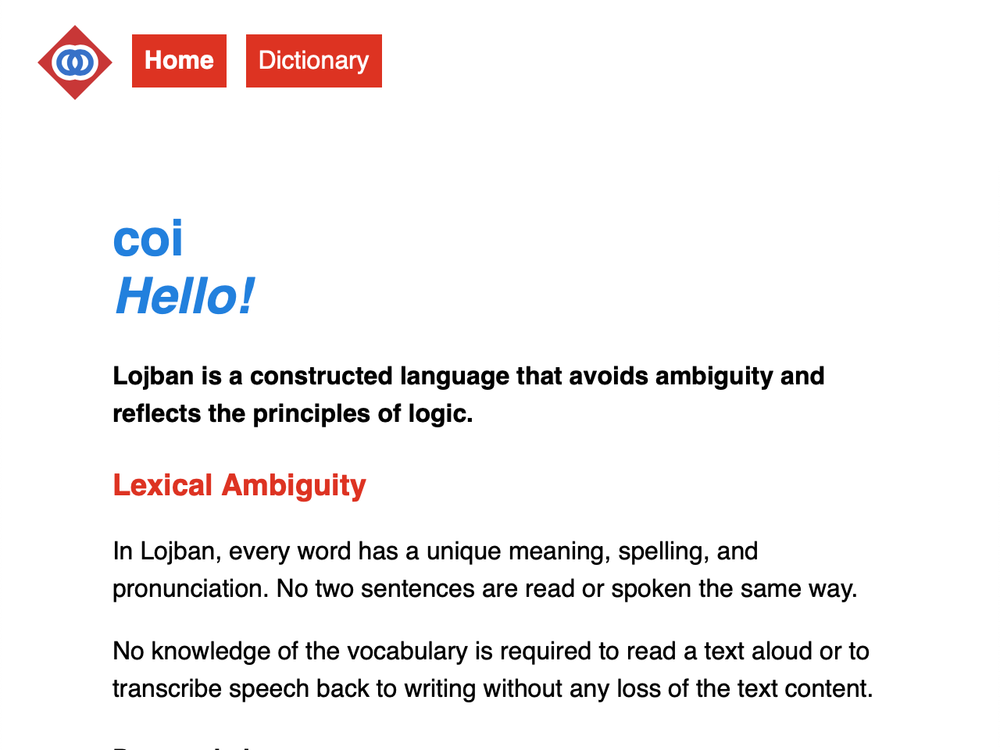
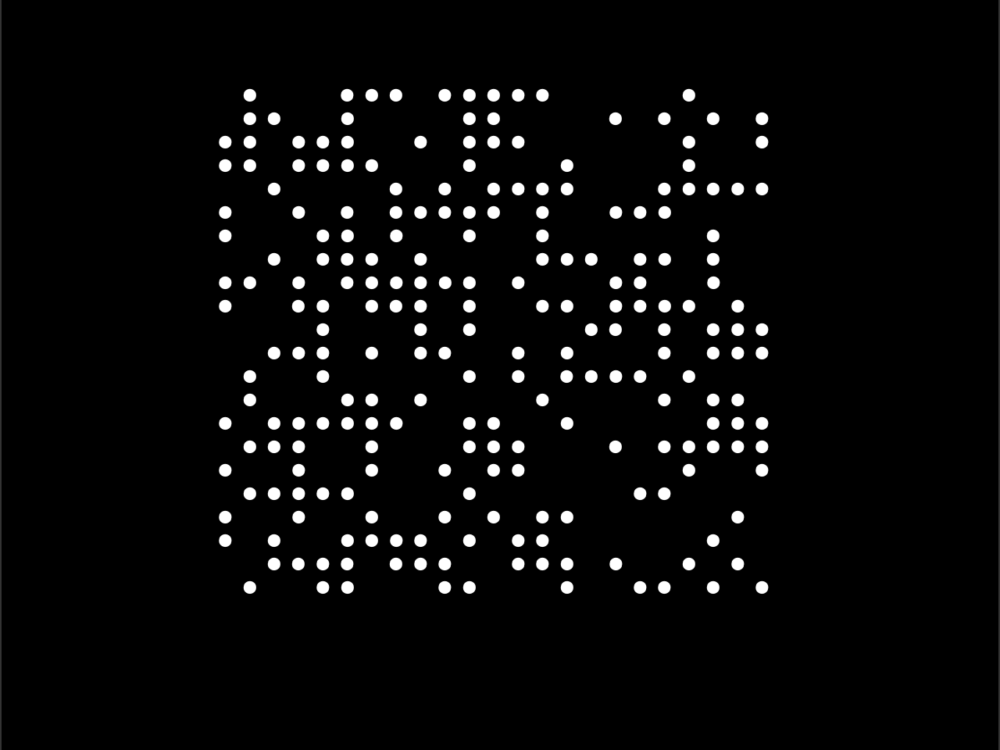
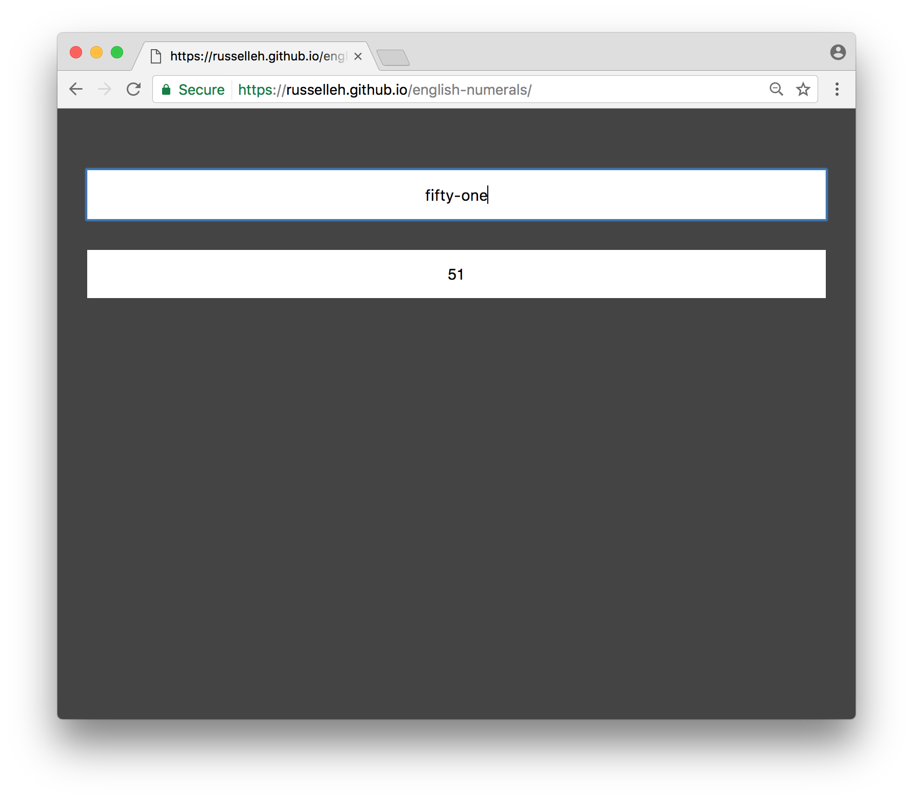
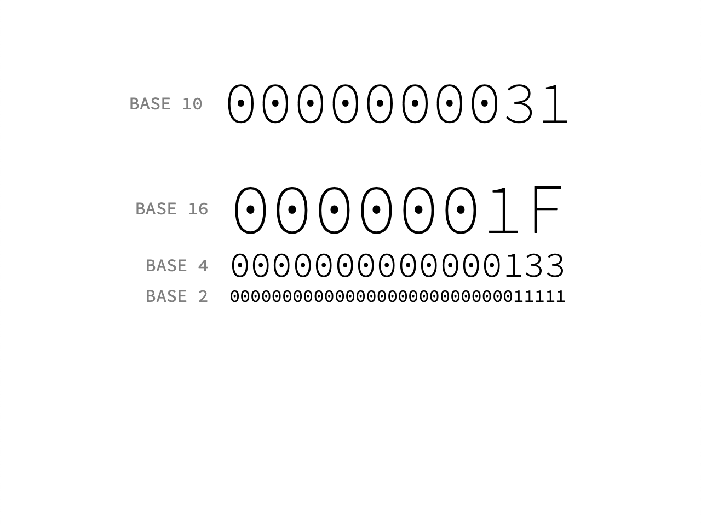
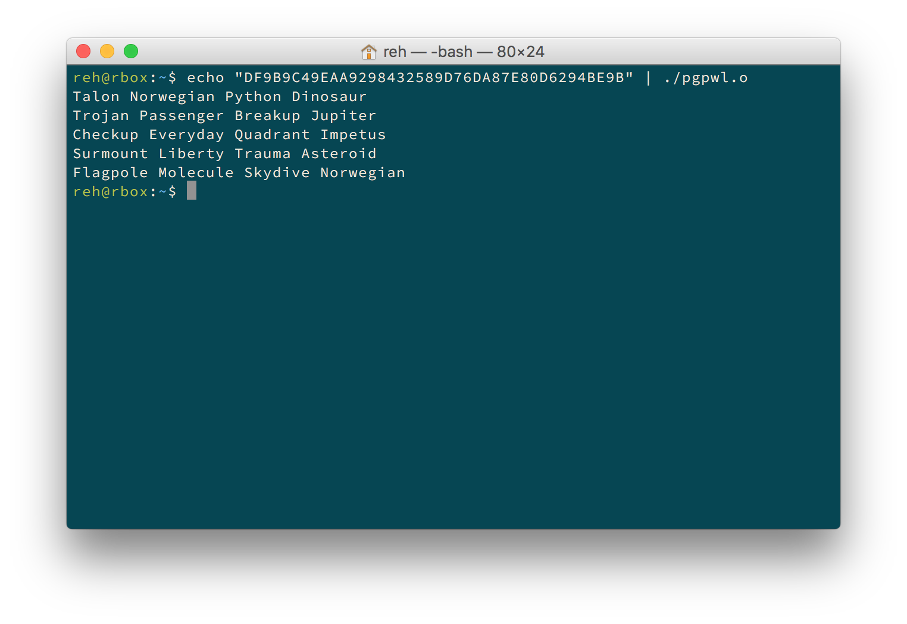
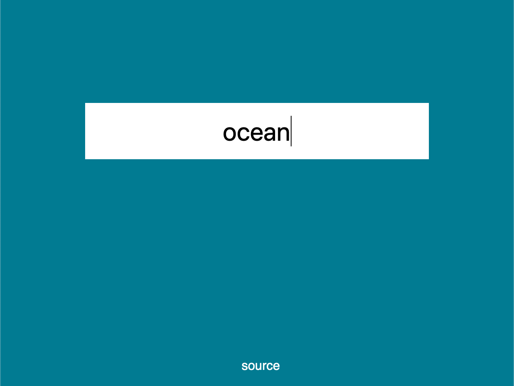

This web page belongs to a human person usually called Russell Emmer and sometimes called Russell Harms. I care a lot about the tools people use to communicate and coordinate, and I like using computers to make and play with those tools. I show off those things on this page.
If you're interested in working with or talking to me, you can see my resume here.
Lojbo
 SourceI made Lojbo because I wanted to give others an easy way to understand the beauty that I saw in Lojban without requiring knowledge of linguistics or formal logic. This page includes a searchable dictionary with features not found in other Lojban dictionaries.
Doomsday
 SourceThis binary doomsday clock counts down in Planck time to the Dark Era of the universe, when all black holes will have evaporated. With five hundred and six bits, this clock finishes counting down approximately 10100 years from now.
English Numerals
 SourceThis tool parses numbers written in english without symbols, such as 'one' or 'eight hundred'. This page uses the PEG.js parsing library to compile javascript from a grammar file.
Base
 SourceThis simple counter illustrates the relationship of different number bases by fixing text size to the logarithm of the base. I intended this project to convey the purpose of number base without the need for language.
PGP Word List
 SourceMy one and only C project implements the PGP word list proposed by Patrick Juola and Philip Zimmerman, meant for unambiguous transmission of hexidecimal data over human voice communications. To my knowledge, no other implementation of this specification exists.
XKCD Color
 SourceThis applet uses results from the XKCD color survey to dynamically color the page background based on user input. Public survey data includes some rude words.